第04讲 丰富的图形世界章节期中期末复习(8类热点题型讲练)
第04讲 丰富的图形世界章节期中期末复习(8类热点题型讲练)

目录
【考点一 常见的几何体】 1
【考点二 几何体中的点、棱、面】 3
【考点三 点、线、面、体四者之间的关系】 7
【考点四 平面图形旋转后所得的立体图形】 9
【考点五 正方体的展开图】 11
【考点六 几何体的展开图】 15
【考点七 从不同方向看几何体】 17
【考点八 由展开图求几何体的表面积和体积】 22

【考点一 常见的几何体】
例题：（23-24七年级上·贵州贵阳·期末）下列物体的形状类似于圆柱的是（ ）
A． B．
B． C． D．
C． D．
【答案】D
【知识点】常见的几何体
【分析】此题主要考查几何体的识别，解题的关键是熟知圆柱体的特点．
【详解】解：A是长方体，B是圆锥体，C是球体，D是圆柱体
故选D．
【变式训练】
1．（23-24七年级上·广东深圳·期中）下列标注的图形名称与图形不相符的是（ ）
A． 四棱锥B．
四棱锥B．
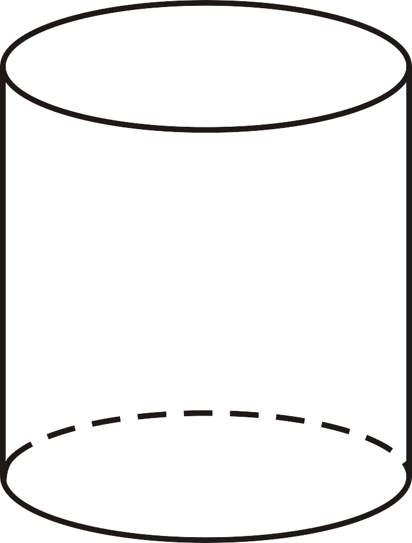
圆柱C．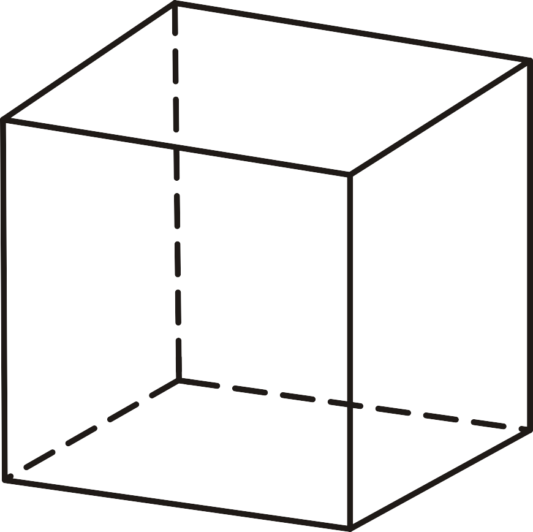
四棱柱D． 三棱锥
三棱锥【答案】D
【知识点】常见的几何体
【分析】本题考查了认识立体图形，熟练掌握每一种几何体的特征是解题的关键．
【详解】解：A． 是四棱锥，故A不符合题意；
B． 是圆柱，故B不符合题意；
C． 是四棱柱，故C不符合题意；
D． 是圆锥，故D符合题意．
故选：D．
2．（23-24七年级上·贵州贵阳·期中）下列几何体中，圆锥是（ ）
A． B．
B．
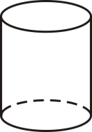
C． D．
D．
【答案】C
【知识点】常见的几何体
【分析】本题考查识别几何体．属于基础题型．掌握常见的几何体，是解题的关键．
【详解】解：由图可知，A选项为立方体，B选项为圆柱体，C选项为圆锥，D选项为四棱柱；
故选C．
3．（23-24七年级上·贵州毕节·期中）下面的几何体中没有曲面的是（ ）.
A．
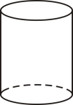
B．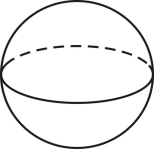
C． D．
D．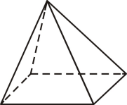
【答案】D
【知识点】常见的几何体、几何体中的点、棱、面
【分析】本题考查了认识立体图形，熟记立体图形的特征是解题关键．根据立体图形的特征，可得答案．
【详解】解：A、圆柱的侧面是曲面，故A不符合题意；
B、球的表面是曲面，故B不符合题意；
C、圆锥的侧面是曲面，故C不符合题意；
D、棱锥的底面是平面，侧面是平面，故D符合题意．
故选：D．
4．（23-24六年级上·山东泰安·期中）下面几何体中，是三棱锥的是（ ）
A．
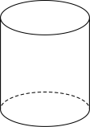
B．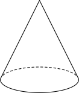
C．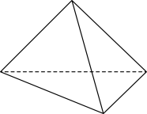
D．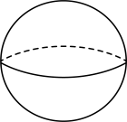
【答案】C
【知识点】常见的几何体
【分析】此题考查立体图形问题，关键是根据棱锥的概念判断．如果一个多面体的一个面是多边形，其余各面是有一个公共顶点的三角形，那么这个多面体叫做棱锥．根据所给几何体逐个分析判断即可．
【详解】解：A．是圆柱体，故不符合题意；
B．是圆锥，故不符合题意；
C．是三棱锥，故符合题意；
D．是球，故不符合题意；
故选：C．
【考点二 几何体中的点、棱、面】
例题：（23-24六年级上·山东烟台·期中）五棱柱是由 个面围成的，有 个顶点，共有 条棱．
【答案】 7 

【知识点】几何体中的点、棱、面
【分析】本题主要考查立体图形的认识，解答此题首先要理解五棱柱的概念和特性，柱体中，面与面相交成棱，棱与棱相交成顶点．根据五棱柱的概念和特性即可解．
【详解】解：五棱柱如图所示：

五棱柱是由7个面围成的，有个顶点，共有条棱．
故答案为：7；10；15．
【变式训练】
1．（23-24七年级上·重庆沙坪坝·期中）一个七棱柱有 个面； 个顶点．
【答案】 9 14
【知识点】几何体中的点、棱、面
【分析】本题考查了棱柱的面，顶点，一个七棱柱是由两个七边形的底面和7个四边形的侧面组成，根据其特征进行填空即可．
【详解】解：一个七棱柱有9个面，14个顶点，
故答案为：9，14．
2．（23-24七年级上·陕西西安·期中）如图，这是一个五直棱柱，若它的底面边长都是 ，侧棱长都是
，侧棱长都是 ，回答下列问题：
，回答下列问题：

(1)它有________个侧面，________个底面．
(2)它的所有侧面的面积之和是多少？
【答案】(1)5；2．
(2) ．
．
【知识点】几何体中的点、棱、面
【分析】（1）根据棱柱的特征回答即可；
（2）根据矩形的面积公式，先算一个侧面的面积，再算所有侧面积之和．
本题考查了棱柱的特征：n棱柱有n个侧面，2个底面，每个侧面都是长方形．
【详解】（1）五棱柱有5个侧面，2个底面。
故答案为：5；2．
（2）一个侧面的面积为
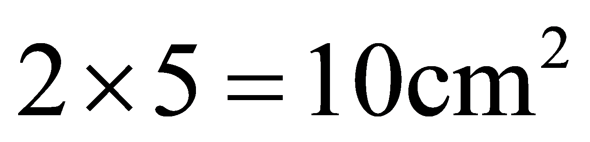
，侧面积之和为
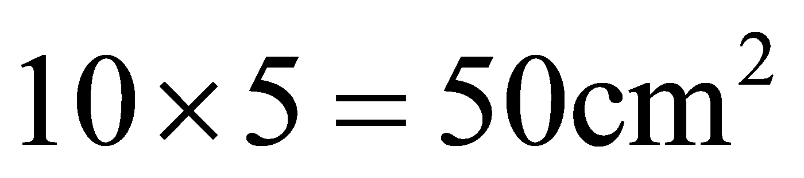
．答：它的所有侧面的面积之和是．
4．（23-24六年级上·山东泰安·期中）推理猜测：
(1)三棱锥有________条棱，________个面；四棱锥有________条棱，________个面．
(2)________棱锥有30条棱，________棱锥有101个面；
(3)有没有一个多棱锥，其棱数是2024，若有，求出它有多少个面；若没有，说明为什么？
【答案】(1)6，4，8，5
(2)十五，一百
(3)有，它有1013个面
【知识点】几何体中的点、棱、面
【分析】本题考查了立体图形，掌握棱锥的特征和命名规则是解题的关键．
（1）根据三棱锥、四棱锥的特征，数出其棱数和面数即可；
（2）总结出n棱锥 条棱，
条棱， 个面，即可解答；
个面，即可解答；
（3）根据（2）中的规律，先确定这是几棱锥，再确定其面数即可．
【详解】（1）解：三棱锥有6条棱，4个面；四棱锥有8条棱，5个面．
故答案为：6，4，8，5；
（2）解：根据题意可得：
三棱锥有6条棱，4个面，
四棱锥有8条棱，5个面，
五棱锥有10条棱，6个面，
……
n棱锥条棱，个面，
当
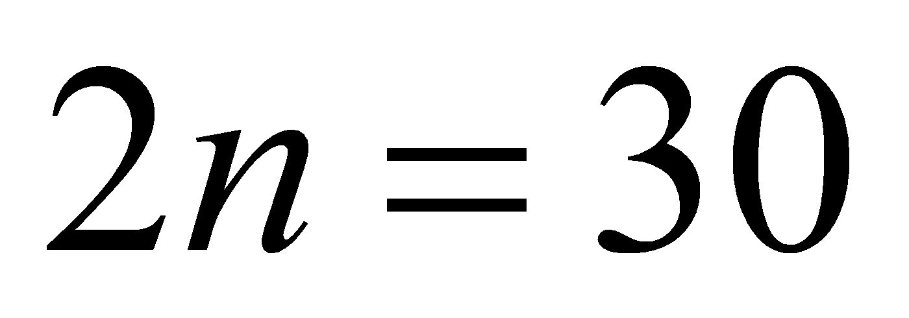
时，解得
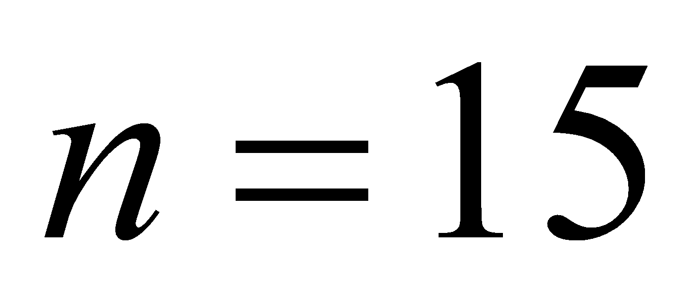
，∴十五棱锥有30条棱，
当 时，
时，
解得
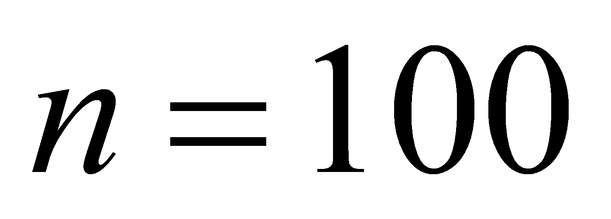
，∴一百棱锥有101个面，
故答案为：十五，一百；
（3）解：当 时，
时，
解得： ，
，
∴
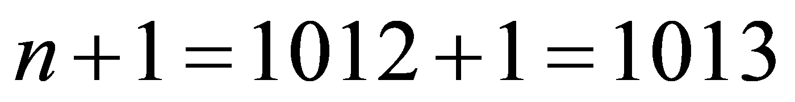
，即：有，它有1013个面．
4．（23-24七年级上·四川达州·阶段练习）十八世纪瑞士数学家欧拉证明了简单多面体中顶点数（V）、面数（F）、棱数（E）之间存在的一个有趣的关系式，被称为欧拉公式．请你观察下列几种简单多面体模型，回答下列问题：

(1)根据上面多面体模型，完成表格中的空格：
多面体 | 顶点数（V） | 面数（F） | 棱数（E） |
四面体 | 4 | 4 | |
长方体 | 8 | 6 | 12 |
正八面体 | 8 | 12 | |
正十二面体 | 20 | 12 | 30 |
四面体棱数是_；正八面体顶点数是_．
你发现顶点数（V）、面数（F）、棱数（E）之间存在的关系式是_．
(2)一个多面体的面数比顶点数小8，且有30条棱，则这个多面体的面数是_．
(3)某个玻璃饰品的外形是简单多面体，它的外表面是由三角形和八边形两种多边形拼接而成，且有24个顶点，每个顶点出都有3条棱，设该多面体外表三角形的个数为 个，八边形的个数为
个，八边形的个数为 个，求
个，求 的值．
的值．
【答案】(1)6；6；
(2)12
(3)
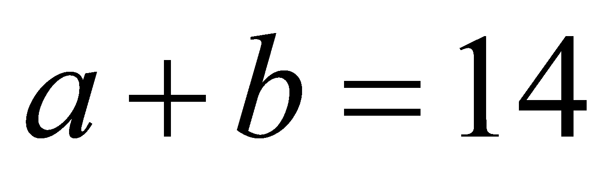
【知识点】几何体中的点、棱、面
【分析】本题考查了欧拉公式和数学常识，注意多面体的顶点数，面数，棱数之间的关系及灵活运用．
（1）观察可得顶点数 面数
面数
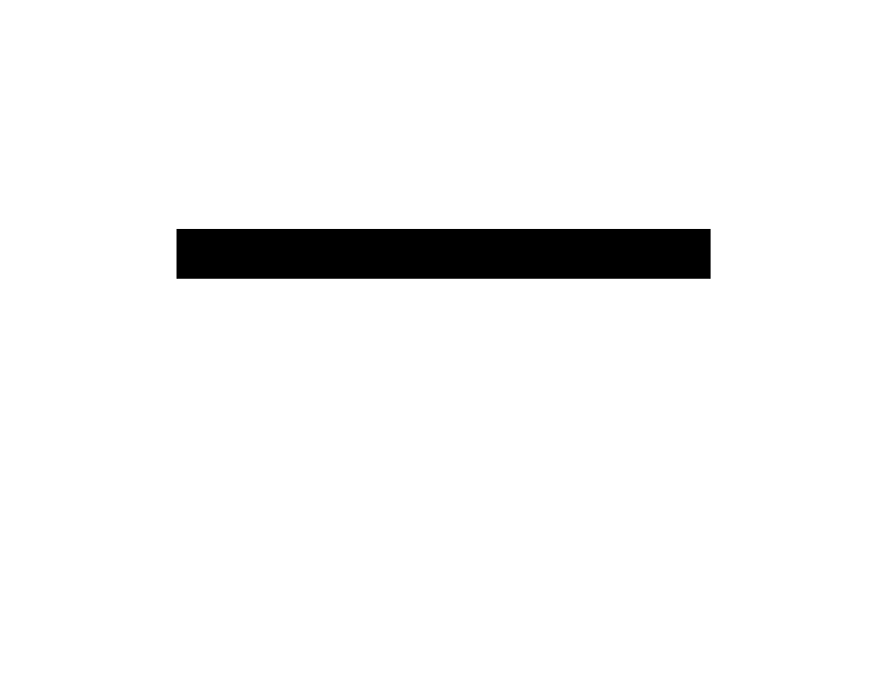
棱数 ；
；（2）代入（1）中的式子即可得到面数；
（3）得到多面体的棱数，求得面数即为的值．
【详解】（1）解：四面体的棱数为6；
正八面体的顶点数为6；
关系式为：；
故答案为：6；6；；
（2） 一个多面体的面数比顶点数小8，
一个多面体的面数比顶点数小8，
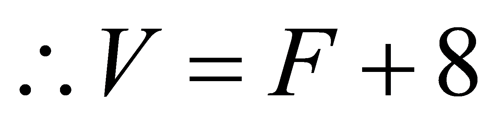
，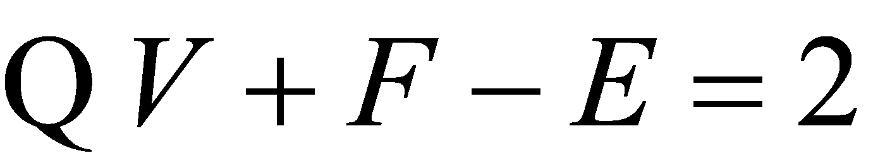
，且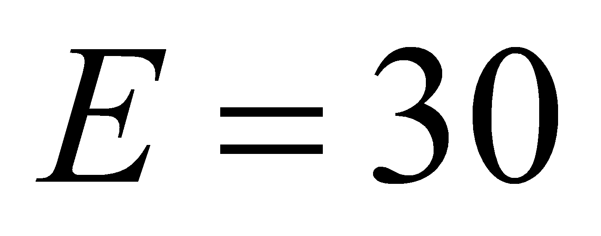
，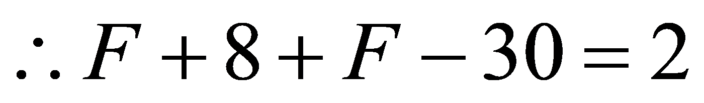
，解得
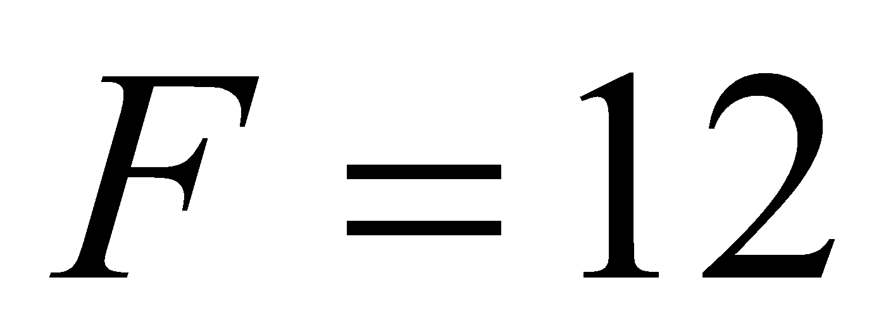
；故答案为：12；
（3）有24个顶点，每个顶点处都有3条棱，两点确定一条直线；
 共有
共有
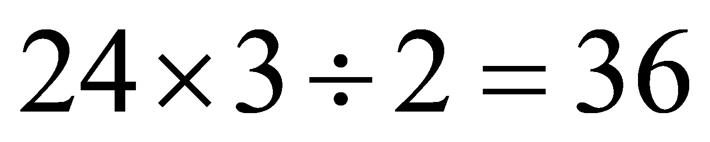
条棱，那么
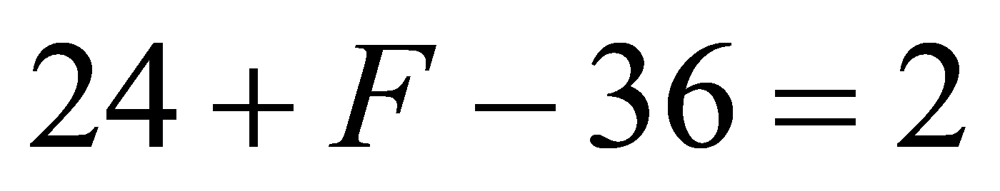
，解得
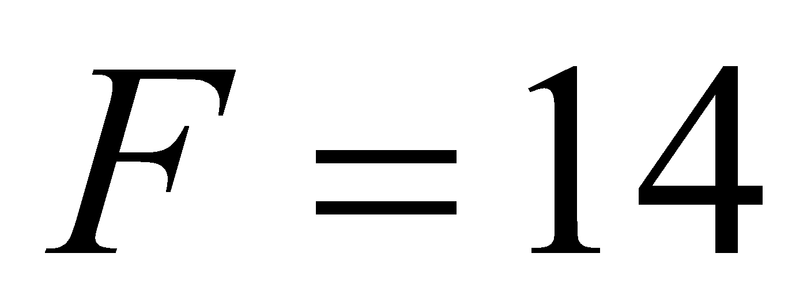
，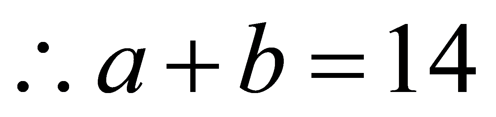
．【考点三 点、线、面、体四者之间的关系】
例题：（23-24七年级上·河南许昌·期末）中国扇文化有着深厚的文化底蕴；历来中国有“制扇王国”之称． 如图，打开折扇时，随着扇骨的移动形成一个扇面，这种现象可以用数学原理解释为（ ）

A．点动成线 B．线动成面 C．面动成体 D．两点确定一条直线
【答案】B
【知识点】点、线、面、体四者之间的关系
【分析】本题考查了线、面的关系，根据题意，结合线动成面的数学原理：某一条线在运动过程中留下的运动轨迹会组成一个平面图形，这个平面图形就是一个面，即可得出答案．熟练掌握线动成面的数学原理是解本题的关键．
【详解】解：打开折扇时，随着扇骨的移动形成一个扇面，这种现象可以用数学原理解释为线动成面，
故选：B．
【变式训练】
1．（22-23七年级上·山东临沂·期末）中华武术是中国传统文化之一，是中华民族在日常生活中结合社会哲学、中医学、伦理学、兵学、美学、气功等多种传统文化思想和文化观念，注重内外兼修，诸如整体观、阴阳变化观、形神论、气论、动静说、刚柔说等，逐步形成了独具民族风貌的武术文化体系.“枪挑一条线，棍扫一大片”，从数学的角度解释为（ ）
A．点动成线，线动成面 B．线动成面，面动成体
C．点动成线，面动成体 D．点动成面，面动成线
【答案】A
【知识点】点、线、面、体四者之间的关系
【分析】本题考查了点、线、面、体的知识点，熟练掌握点、线、面之间的关系是解题的关键；
枪挑是用枪尖挑，枪尖可看作点，棍可看作线，转化成数学思想即可．
【详解】由题意可得：从数学的角度可解释为点动成线，线动成面．
故选：A．
2．（23-24七年级上·陕西西安·期中）“力箭一号”
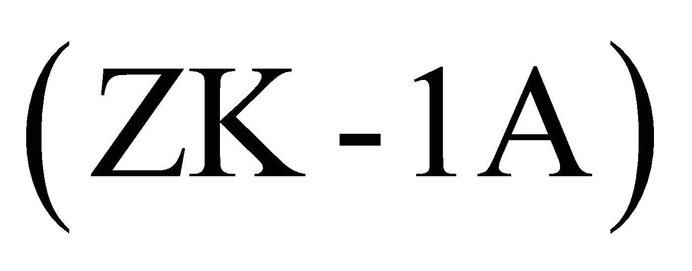
运载火箭在酒泉卫星发射中心采用“一箭六星”的方式，成功将六颗卫星送入预定轨道，首次飞行任务取得圆满成功．把卫星看成点，则卫星在预定轨道飞行留下的痕迹体现了 的数学事实．【答案】点动成线
【知识点】点、线、面、体四者之间的关系
【分析】本题考查了点，线的概念，理解点动成线是解答本题的关键．
根据点动成线的概念得到答案．
【详解】解：由题意得：
把卫星看成点，把卫星在预定轨道飞行留下的痕迹看作是一条线，这就体现了点动成线的数学事实．
故答案为：点动成线
3．（23-24七年级上·河南郑州·期中）请写出生活中的一个现象，使其可解释为“点动成线”，你所写的这个现象是 .
【答案】笔尖在纸上写出汉字（答案不唯一）
【知识点】点、线、面、体四者之间的关系
【分析】本题主要考查了点、线、面、体，将数学知识与实际生活的例子联系起来是解题关键．结合实际生活的例子分析得出即可．
【详解】解：笔尖在纸上写出汉字可解释为“点动成线”，
故答案为：笔尖在纸上写出汉字．
4．（22-23七年级上·广东河源·期中）表的指针旋转时，会形成一个圆面，笔在纸上移动时，能画出线．一般地，点动成线， ， ．
【答案】 线动成面 面动成体
【知识点】点、线、面、体四者之间的关系
【分析】根据点、线、面、体之间的联系，根据运动的观点即可解．
【详解】如果我们把笔尖看成一个点,当笔尖在纸上移动时，就能画出线，这说明点动成线；时钟的秒针旋转时,形成一个面，这说明线动成面．
故答案是：线动成面，点动成线．
【考点四 平面图形旋转后所得的立体图形】
例题：（23-24七年级上·贵州贵阳·期中）如图是一个由平面图形绕虚线旋转得到的立体图形，则这个平面图形是（ ）
 A．
A． B．
B． C．
C． D．
D．
【答案】A
【知识点】平面图形旋转后所得的立体图形
【分析】本题考查了点、线、面、体——图形的旋转，解题关键在于要有丰富的空间想象能力．图示几何体是由两个圆柱组成的，矩形旋转成圆柱，据此即可求解．
【详解】解：A、图形绕虚线旋转一周，能够得到上下两个圆柱，故选项符合题意；
B、图形绕虚线旋转一周，能够得到上下两个圆柱，且上圆柱有空心，故选项不符合题意．
C、图形绕虚线旋转一周，能够得到上下中下三个圆柱，且上下圆柱有空心，故选项不符合题意；
D、图形绕虚线旋转一周，能够得到上下中下三个圆柱，故选项不符合题意；
故选：A．
【变式训练】
1．（23-24七年级上·陕西咸阳·期中）以 为轴旋转一周后得到的立体图形是（ ）
为轴旋转一周后得到的立体图形是（ ）
 A．
A． B．
B．
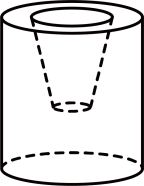
C． D．
D．
【答案】C
【知识点】平面图形旋转后所得的立体图形
【分析】本题考查了平面图形的旋转，根据矩形绕着它的一条边旋转一周得到的几何体是圆柱，再结合题目中的四个选项即可得出答案，理解平面图形的旋转是解题的关键．
【详解】
解：以为轴旋转一周后得到的立体图形是，
故选： ．
．
2．（23-24七年级上·陕西榆林·期中）如图是一张长方形纸片，长方形的长为 ，宽为
，宽为 ，若将此长方形纸片绕它的一边所在直线旋转一周，得到一个几何体．
，若将此长方形纸片绕它的一边所在直线旋转一周，得到一个几何体．

(1)这个几何体的名称是 ，这个现象用数学知识解释为 ；
(2)求得到的这个几何体的体积（结果保留 ）
）
【答案】(1)圆柱，面动成体；
(2)得到的几何体的体积为
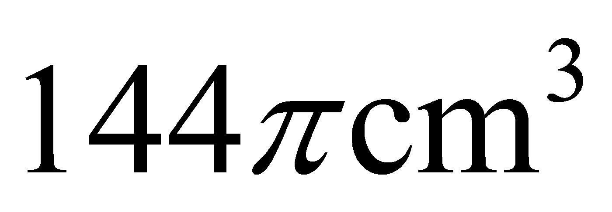
或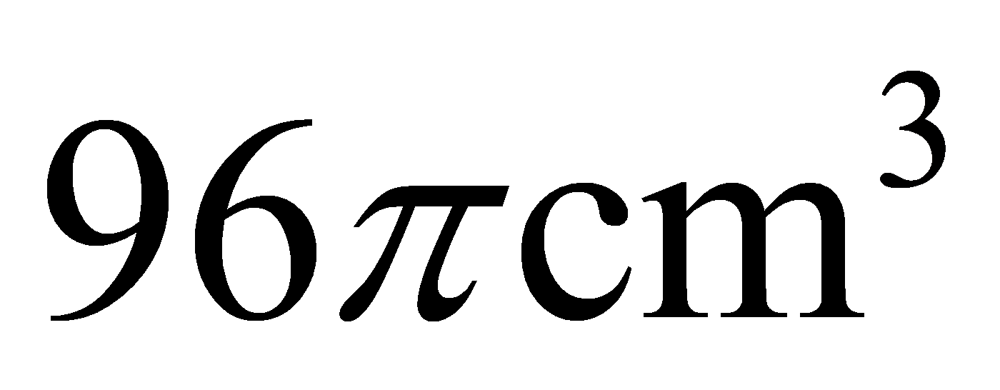
【知识点】平面图形旋转后所得的立体图形
【分析】本题考查几何体的体积以及面动成体；
（1）根据面动成体可知，将长方形纸片绕它的一边所在直线旋转一周，得到的几何体是圆柱；
（2）分两种情况确定出圆柱的底面半径和高，再根据圆柱的体积公式计算即可求解．
【详解】（1）解：将长方形纸片绕它的一边所在直线旋转一周，得到的几何体是圆柱，这个现象用数学知识解释为面动成体，
故答案为：圆柱，面动成体；
（2）①若绕的边所在直线旋转一周，得到的是底面半径为，高为的圆柱，
它的体积为：
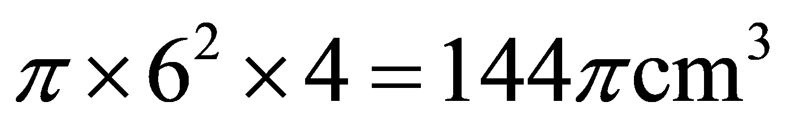
；②若绕的边所在直线旋转一周，得到的是底面半径为，高为的圆柱，
它的体积为：
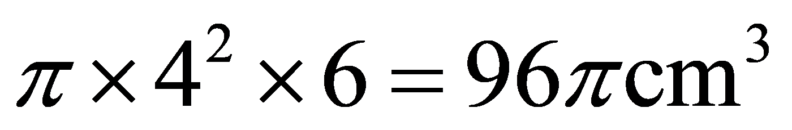
；综上：得到的几何体的体积为或．
3．（22-23七年级上·广东深圳·期中）如图，某银行大堂的旋转门内部由三块宽为 、高为
、高为 的玻璃隔板组成．
的玻璃隔板组成．

(1)将此旋转门旋转一周，能形成的几何体是_____，这能说明的事实是_____（选择正确的一项填入）．
A．点动成线 B．线动成面 C．面动成体
(2)求该旋转门旋转一周形成的几何体的体积．（边框及衔接处忽略不计，结果保留 ）
）
【答案】(1)圆柱；C
(2)
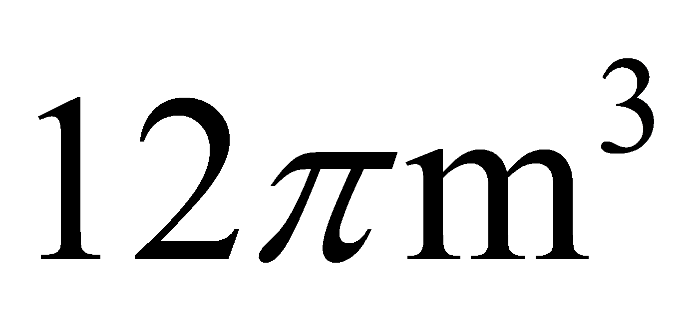
【知识点】点、线、面、体四者之间的关系、平面图形旋转后所得的立体图形
【分析】（1）旋转门的形状是长方形；长方形旋转一周，能形成的几何体是圆柱；
（2）根据圆柱体的体积 底面积
底面积 高计算即可．
高计算即可．
【详解】（1）解：∵旋转门的形状是长方形，
∴旋转门旋转一周，能形成的几何体是圆柱，这能说明的事实是面动成体．
故答案为：圆柱；C；
（2）解：该旋转门旋转一周形成的几何体是圆柱，
体积为：
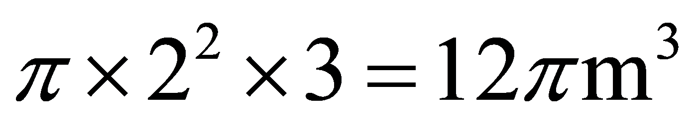
．故形成的几何体的体积是．
【点睛】本题考查了圆柱的体积的求法，掌握圆柱的体积公式，能够正确得出圆柱的底面面积是解决问题的关键．
【考点五 正方体的展开图】
例题：（23-24七年级上·四川达州·期中）如图所示，不是正方体展开图形的是（ ）
A．
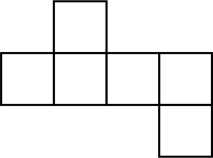
B．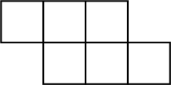
C．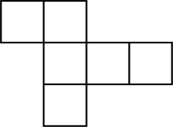
D．
【答案】B
【知识点】正方体几种展开图的识别
【分析】本题考查了几何体的展开图．明确只要有“田凹L应弃之”字格的展开图都不是正方体的表面展开图是解题的关键．根据平面图形的折叠及正方体的展开图解答，中间四联方，上下各一个，可以围成正方体．
【详解】解：正方体共有11种表面展开图，
A、C、D能围成正方体；
B不能，折叠后有两个面重合，不能折成正方体．
故选：B．
【变式训练】
1．（23-24七年级上·宁夏中卫·期中）如图，现有5个写有“传承红色基因”字样的正方形，在图中增加1个写有“因”字的正方形使所得图形经过折叠能够围成一个正方体，下列选项添加错误的是（ ）．
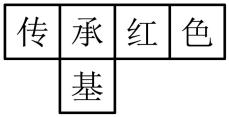
A． B．
B．
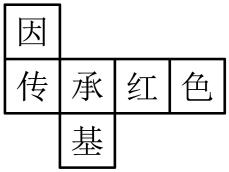
C．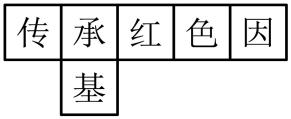
D．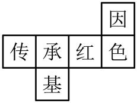
【答案】C
【知识点】正方体几种展开图的识别
【分析】本题主要考查了正方体的平面展开图折叠成几何体，通过结合立体图形与平面图形的相互转化，去理解和掌握几何体的展开图，从给定的图形中辨认它们能否折叠成给定的立体图形即可．
【详解】解：根据给定的“传承红色基”字样的排列，要折叠成正方形只能在其上方增加“因”字，
A、折叠后可以，故本选项不符合题意；
B、折叠后可以，故本选项不符合题意；
C、折叠后不可以，故本选项符合题意；
D、折叠后可以，故本选项不符合题意．
故选：C．
2．（23-24七年级上·山东济南·期中）从如图所示的7个小正方形中剪去一个小正方形，使剩余的6个小正方形折叠后能围成一个正方体，则不能剪去的小正方形上的字是（ ）

A．山 B．水 C．您 D．迎
【答案】C
【知识点】正方体几种展开图的识别
【分析】本题考查了正方体的展开图，根据正方体的展开图的特点解答即可．
【详解】解：根据正方体的展开图可得：要使剩余的 个小正方形折叠后能围成一个正方体，不应剪去标记为“您”的小正方形．
个小正方形折叠后能围成一个正方体，不应剪去标记为“您”的小正方形．
故选：C．
3．（22-23六年级下·山东东营·期中）如图，将正方体的平面展开图重新折成正方体后，“数”字对面的字是（ ）
A．喜 B．欢 C．我 D．学
【答案】A
【知识点】正方体相对两面上的字
【分析】本题考查了正方体相对两个面上的文字，正方体的表面展开图，相对的面之间一定相隔一个正方形，根据这一特点作答，解题的关键是正确理解正方体表面展开图．
【详解】解：由正方体的表面展开图，相对的面之间一定相隔一个正方形，根据这一特点可知，
“数”的对面是“喜”，
故选： ．
．
4．（23-24七年级上·河南许昌·期末）诸葛亮的《诫子书》中有“非学无以广才”，如图是正方体的一种表面展开图，则原正方体中与“非”字所在的面相对的面上的汉字是（ ）
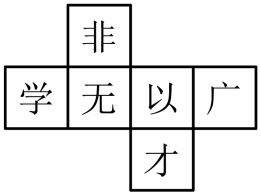
A．学 B．以 C．广 D．才
【答案】D
【知识点】正方体相对两面上的字
【分析】此题考查正方体相对两个面上的文字的知识；找出正方体的相对面上的汉字解题即可．
【详解】解：由正方体的展开图特点可得：“非”和“才”相对；“学”和“以”相对；“无”和“广”相对；
故选：D．
5．（23-24七年级上·广东梅州·期中）如图所示的是一个正方体的展开图，这个正方体可能是（ ）
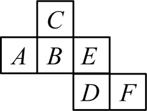
AIA．
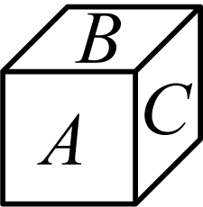
B．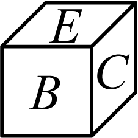
C． D．
D．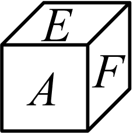
【答案】C
【知识点】含图案的正方体的展开图
【分析】本题主要考查正方体的平面展开图上的图案的相对位置，理解把展开图折叠后，各个面上图案的相对位置，是解题的关键．结合正方体的展开图中各个字母所在面的相对位置，把展开图折叠后，再观察其位置，即可得到这个正方体．
【详解】解：A．图中字母C所在的面应在左边，故A错误；
B．图中字母C所在的面也应在左边，故B错误；
C．图中正方体与展开图相符，故C正确．
D．图中字母A所在的面与字母E所在的面应相对，不相邻，故D错误．
故选：C．
6．（22-23七年级上·广东梅州·期中）将如图所示的硬纸片围成正方体纸盒（接缝粘贴部分忽略不计），则围成的正方体纸盒是（ ）
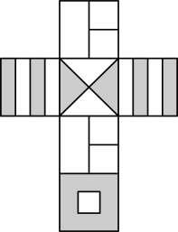
A． B． C．
C．
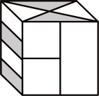
D．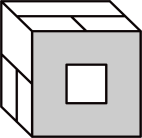
【答案】A
【知识点】含图案的正方体的展开图
【分析】考查平面图形的折叠问题；动手操作可很快得到答案．根据最左边和最右面的2个正方形为相对的面，最上面的正方形和第3个正方形为相对的面，其余的2个面为相对的面解答，也可动手操作得到答案．
【详解】解：画出所给平面图形，把所给的平面图形进行折叠，得到正方体，摆成各个选项的正面所对的情况，可得选项A正确．
故选A．
7．（23-24七年级上·四川达州·期中）如图是一个正方体的平面展开图，则这个正方体是（ ）

A． B．
B． C． D．
C． D．
【答案】C
【知识点】含图案的正方体的展开图
【分析】本题考查正方体展开图，根据相邻三面的图形逐个判断即可得到答案；
【详解】解：由图形可得，
隐形图形：圆与正方形、三角形相邻，且三角形左边是阴影，三个图形组合有一个公共点，
故A、B、D不正确，C正确，
故选：C．
8．（23-24七年级上·广东深圳·期中）把如图所示的正方体展开，则选项中哪一个图形不是这个正方体的展开图（ ）
A． B． C．
C． D．
D．
【答案】B
【知识点】含图案的正方体的展开图
【分析】此题主要考查了含图案的正方体的展开图，根据图中符号所处的位置关系作答．
【详解】解：从立体图形可以看出实心圆和两个空心圆都是相邻的关系，排除A、C、D选项，
B选项中，实心圆和其中一个空心圆是相对面，不是这个正方体的展开图．
故选：B．
【考点六 几何体的展开图】
例题：（23-24六年级下·黑龙江哈尔滨·期中）下列图形是三棱柱的平面展开图的是( )
A． B． C．D．
C．D．
【答案】B
【知识点】几何体展开图的认识
【分析】此题考查了简单几何体的侧面展开图，根据三棱柱是由三个大小相同的长方形和两个全等的三角形构成的解答即可．
【详解】解：A、两底在同一侧，不是三棱柱的平面展开图，故此选项不符合题意；
B、是三棱柱的平面展开图，故此选项符合题意；
C、不是三棱柱的平面展开图，故此选项不符合题意；
D、不是三棱柱的平面展开图，故此选项不符合题意．
故选：B．
【变式训练】
1．（23-24六年级下·黑龙江哈尔滨·期中）如图，下方立体图形的展开图是（ ）
 A．
A． B．
B． C．
C． D．
D．
【答案】B
【知识点】几何体展开图的认识
【分析】本题主要考查了三棱柱的展开图，熟知三棱柱的侧面展开图是三个长方形，上下底面的展开图是三角形是解题的关键．
【详解】解：三棱柱的侧面展开图是三个长方形，上下底面的展开图是三角形，则四个选项中只有B选项符合题意，
故选：D．
2．（23-24七年级上·四川达州·期末）如图所示为几何体的平面展开图，从左到右，其对应的几何体名称分别为（ ）
A．圆锥、正方体、三棱柱、圆柱 B．圆柱、正方体、圆锥、三棱柱
C．圆锥、正方体、圆柱、三棱柱 D．圆柱、圆锥、正方体、圆锥
【答案】A
【知识点】几何体展开图的认识
【分析】本题考查由几何体的平面展开图还原立体几何图形，熟记常见的立体几何图形的平面展开图是解决问题的关键．
【详解】解：根据题中所给几何体的平面展开图，从左到右，其对应的几何体名称分别为：圆锥、正方体、三棱柱、圆柱，
 A、圆锥、正方体、三棱柱、圆柱，四个均正确，符合题意；
A、圆锥、正方体、三棱柱、圆柱，四个均正确，符合题意；
B、圆柱、正方体、圆锥、三棱柱，第一个、第三个、第四个均错误，不符合题意；
C、圆锥、正方体、圆柱、三棱柱，第三个、第四个错误，不符合题意；
D、圆柱、圆锥、正方体、圆锥，四个均错误，不符合题意；
故选：A．
3．下列选项中，左边的平面图形能够折成右边封闭的立体图形的是（ ）
A． B．
B．
C． D．
D．
【答案】C
【知识点】几何体展开图的认识
【分析】本题考查立体几何图形的展开图，解题的关键是要熟悉一些常见立体几何的展开图．利用空间想象能力，对立体几何图形的展开图做一个判断，首先要确定，展开后的面的个数是否准确，再去确定面的位置是否合理．
【详解】解：A选项错误，正方体展开图错误，故本选项不符合题意；
B选项错误，展开图中圆应靠在扇形的弧上，错误，故本选项不符合题意；
C选项正确，故本选项符合题意；
D选项错误，展开图少一个底面，错误，故本选项不符合题意；．
故选：C．
【考点七 从不同方向看几何体】
例题：（23-24七年级上·山东济南·期中）如图是由5个相同的小立方块搭成的几何体，从正面看这个几何体是（ ）
A． B． C． D．
【答案】D
【知识点】从不同方向看几何体
【分析】本题主要考查了从不同方向看几何体．从正面看到的图形是三列，其中左面第一列有两个正方形，第二列有一个正方形，第三列有一个正方形，作出判断即可．
【详解】解：正面看到的图形是三列，其中左面第一列有两个正方形，第二列有一个正方形，第三列有一个正方形，即：
故选：D．
【变式训练】
1．（23-24七年级上·广东梅州·期中）下列物体是由五个棱长为 的正方体组成如图的几何体．
的正方体组成如图的几何体．

(1)该几何体的体积是 ，表面积是 ；
(2)分别画出从正面、左面、上面看到的立体图形的形状．
【答案】(1)，
(2)见解析
【知识点】从不同方向看几何体
【分析】本题考查从不同方向看几何体，几何体的体积及表面积．熟练掌握体积及表面积计算公式以及从不同方向看几何体的定义是解答本题的关键．
（1）根据几何体的形状得出立方体的体积和表面积即可；
（2）从正面看有3列，从左往右每一列小正方形的数量为1，2，1；从左面看有2列，小正方形的个数为2，1；从上面看有3列，从左往右小正方形的个数为2，1，1，据此作图即可．
【详解】（1）解：几何体的体积：，
表面积：；
故答案为：，；
（2）如图所示：
2．（22-23七年级上·辽宁丹东·期中）如图，是由一些棱长为的小正方体组成的简单几何体，


(1)从正面看到的平面图形如图所示，请在下面方格中分别画出从左向右、从上向下看到的平面图形；
(2)请直接写出该几何体的表面积（含下底面）为______．
【答案】(1)作图见解析
(2)
【知识点】几何体中的点、棱、面、从不同方向看几何体
【分析】本题考查从不同方向观察简单组合体，
（1）根据从左向右、从上向下看到的平面图形并画出相应的图形即可；
（2）根据从不同方向看到的平面图形的面积并结合具体的图形进行计算即可；
掌握从不同方向观察简单组合体的方法是解题的关键．
【详解】（1）解：从左向右、从上向下看到的平面图形如图所示：
（2）∵是由一些棱长为的小正方体组成的简单几何体，
∴根据从不同方向观察这个组合体的所得平面图形的面积可得该几何体的表面积（含下底面）：
，
∴该几何体的表面积（含下底面）为．
故答案为：．
3．（23-24七年级上·贵州贵阳·期中）一个几何体由若干大小相同的小立方块搭成，下图分别是从它的正面、上面看到的形状图．

(1)该几何体至少是______块小立方块搭成的；
(2)该几何体最多是用______块小立方块搭成的；
(3)当搭成该几何体的小立方块最多时，画出从左面看到的几何体的形状图．
【答案】(1)6
(2)8
(3)见解析
【知识点】从不同方向看几何体
【分析】本题考查了从不同的方向看几何体，由从正面和从上面想象几何体的形状，解题的关键是综合起来考虑整体形状．
（1）根据从正面看到的图可得，从上面看到的图中左边一列中至少一处有2层，进行解答即可；
（2）根据从正面看到的图可得，从上面看到的图中左边一列中最多3处有2层，由此即可判断；
（2）根据从左面看到的正方形个数进行解答即可．
【详解】（1）解：根据从正面看到的图可得，从上面看到的图中左边一列中至少一处有2层，
∴该几何体至少是用个小立方块搭成的，
故答案为：6．
（2）解：根据从正面看到的图可得，从上面看到的图中左边一列中最多3处有2层，
∴该几何体最多是用个小立方块搭成的，
故答案为：8．
（3）解：从左面看到的几何体的形状图，如图所示：

4．（23-24七年级上·辽宁沈阳·期中）作图
(1)如图是由10个同样大小的小正方体搭成的几何体，请分别画出它的主视图和俯视图．
(2)在主视图和俯视图不变的情况下，你认为最多还可以添加________个小正方体．
(3)若每个小正方体的边长为1，则这个几何体的表面积为________．
【答案】(1)见解析
(2)3
(3)38
【知识点】从不同方向看几何体
【分析】本题考查了作图一三视图，注意在画图时一定要将物体的边缘、棱、顶点都体现出来，看得见的轮廓线都画成实线，看不见的画成虚线．
（1）根据主视图有3列，每列小正方形数目分别为3，1，2;俯视图有3列，每列小正方形数目分别为3，2，1，作出图形即可；
（2）根据保持这个几何体的主视图和俯视图不变，可在左边最前面可添加2个，左边中间可添加1个，依此即可求解；
（3）每个小正方体的一个面的面积为1，将每个面的小正方形面积相加即可求解．
【详解】（1）解：主视图，俯视图如下：
（2）根据保持这个几何体的主视图和俯视图不变，可在左边最前面可添加2个，左边中间可添加1个，一共3个，
故答案为：3；
（3） 每个小正方体的边长为1，
每个小正方体的边长为1，
每个小正方体的一个面的面积为1，
，
故答案为：38．
5．（23-24六年级上·山东东营·期中）如图，是用几个相同的正方体搭出的几何体，请解答下列问题：

(1)分别在方格纸中画出从正面、左面、上面看这个几何体时看到的图形；
(2)如果在这个几何体上再添加几个相同的小正方体，使新几何体和原几何体分别从上面和从左面看到的形状相同，添加小正方体个数最少可以摆______个，最多可以摆______个．
(3)若每个小正方体的棱长为 ，要给这个几何体地面以上的部分涂上颜色，求涂色部分的面积；
，要给这个几何体地面以上的部分涂上颜色，求涂色部分的面积；
【答案】(1)图见解析
(2)1；3
(3)
【知识点】从不同方向看几何体
【分析】本题考查从不同方向看几何体．正确的画出从不同方向看到的平面图形，是解题的关键．
（1）画出从前面，左面，上面看到的图形即可；
（2）根据从上面和从左面看到的形状相同，得到最小可以在第二层添加1个小正方体，最多可以在第二层添加1个，第三层添加2个，共3个；
（3）根据三视图，求出地面以上部分的面积即可．
【详解】（1）解：画出图形，如图所示：
（2）∵从上面和从左面看到的形状相同，
∴最小可以在第二层添加1个小正方体，最多可以在第二层添加1个，第三层添加2个，共3个；
故答案为：1，3；
（3） ．
．
【考点八 由展开图求几何体的表面积和体积】
例题：（23-24七年级上·广东茂名·期中）小明同学将一个长方体包装盒展开，进行了测量，结果如图所示：求这个包装盒的表面积和体积．
【答案】 ，
，
【知识点】由展开图计算几何体的表面积、由展开图计算几何体的体积
【分析】根据长方体包装盒的展开图先分别求出长、宽、高，再根据长方体表面积和体积公式进行求解即可，掌握长方体表面积和体积公式是解题的关键．
【详解】解：由图得
高为： ，
，
长为：（ ），
），
宽为：（）
（），
（）；
故这个包装盒的表面积为，体积为．
【变式训练】
1．（23-24七年级上·陕西汉中·期中）如图，是一个几何体的表面展开图．

(1)该几何体是______________；
(2)求该几何体的体积．
【答案】(1)长方体
(2) （立方米）
（立方米）
【知识点】几何体展开图的认识、由展开图计算几何体的体积
【分析】本题考查了几何体的展开图，掌握立体图形与平面图形的转化，建立空间观念是关键．
（1）依据展开图中图形，即可得出结论；
（2）依据体积计算公式，即可得到该几何体的体积．
【详解】（1）该几何体的名称是长方体；
故答案为：长方体
（2）该几何体的体积为：（立方米）．
2．（23-24七年级上·安徽宿州·期中）赵新在掌握了长方体盒子的制作方法后，制作的一个半成品的平面图如图所示．

(1)在图中补充一个长方形，使该平面图能折叠成一个长方体盒子；
(2)已知赵新制作的长方体盒子的长是 ，宽是
，宽是 ，高是，求这个长方体盒子的体积．
，高是，求这个长方体盒子的体积．
【答案】(1)见解析
(2)这个长方体盒子的体积是
【知识点】由展开图计算几何体的体积
【分析】本题考查了长方体的展开图，长方体的体积的计算，
（1）根据长方体的展开图补充图形即可求解；
（2）根据体积公式即可求解．
【详解】（1）解：因为长方体相对的面是全等的长方形，如图所示；
（2）解：，
答：这个长方体盒子的体积是．
3．（23-24七年级上·辽宁沈阳·期中）如图，是一个几何体的表面展开图．
(1)该几何体是______；
(2)依据图中数据求该几何体的体积；
(3)截去这个几何体的一个角，剩余的立体图形有几条棱？请直接写出答案．
【答案】(1)长方体
(2)15立方米
(3)12条棱或13条棱14条棱或15条棱
【知识点】截一个几何体、几何体展开图的认识、由展开图计算几何体的体积
【分析】（1）根据展开图判断即可；
（2）根据长方体的体积=长×宽×高求解即可；
（3）分四种情况解答即可．
【详解】（1）由展开图可知，该几何体是长方体．
故答案为：长方体；
（2）；
（3）如图，
剩下的几何体可能有：12条棱或13条棱14条棱或15条棱．
【点睛】本题考查了立体图形的展开图，截一个长方体一个角的问题，注意分情况讨论，做到不重复不遗漏．
4．（22-23七年级上·河南南阳·期末）某“综合实践”小组开展了“长方体纸盒的制作”实践活动，他们利用边长为a（cm）的正方形纸板制作出两种不同方案的长方体盒子（图1为无盖的长方体纸盒，图2为有盖的长方体纸盒）．
【操作一】根据图1方式制作一个无盖的长方体盒子．方法：先在纸板四角剪去四个同样大小边长为b（cm）的小正方形，再沿虚线折合起来．
【问题解决】
(1)若 ，
， ，则长方体纸盒的底面积为___________；
，则长方体纸盒的底面积为___________；
【操作二】根据图2方式制作一个有盖的长方体纸盒．方法：先在纸板四角剪去两个同样大小边长为b（cm）的小正方形和两个同样大小的小长方形，再沿虚线折合起来．
【拓展延伸】
(2)若， ，该长方体纸盒的体积为___________；
，该长方体纸盒的体积为___________；
(3)现有两张边长a均为的正方形纸板，分别按图1、图2的要求制作无盖和有盖的两个长方体盒子，若，求无盖盒子的体积是有盖盒子体积的多少倍？
【答案】(1)
(2)
(3)2倍
【知识点】由展开图计算几何体的体积
【分析】（1）由折叠可得底面是边长为的正方形，进而求出底面积即可；
（2）由展开与折叠可知，折叠成长方体的长、宽、高分别为，根据体积公式进行计算即可；
（3）当时，分别求出按图1，图2的折叠方式所得到的长方体的体积即可．
【详解】（1）如图1，若，
则长方体纸盒的底面是边长为的正方形，
因此面积为，
故答案为：；
（2）如图2，先在纸板四角剪去两个同样大小边长为的小正方形和两个同样大小的小长方形，
再沿虚线折合起来可得到长为，宽为，
高为 的长方体，当，
的长方体，当，
该长方体纸盒长为，
宽为，高为 ，
，
所以体积为，
故答案为：；
（3）当时，
，
按图2作的长方体的纸盒的体积为：
，
（倍），
答：无盖盒子的体积是有盖盒子体积的2倍．
【点睛】本题考查展开图折叠成几何体，掌握棱柱的展开图的特征是正确解答的前提，根据展开图得出折叠后长方体的长、宽、高是解决问题的关键．